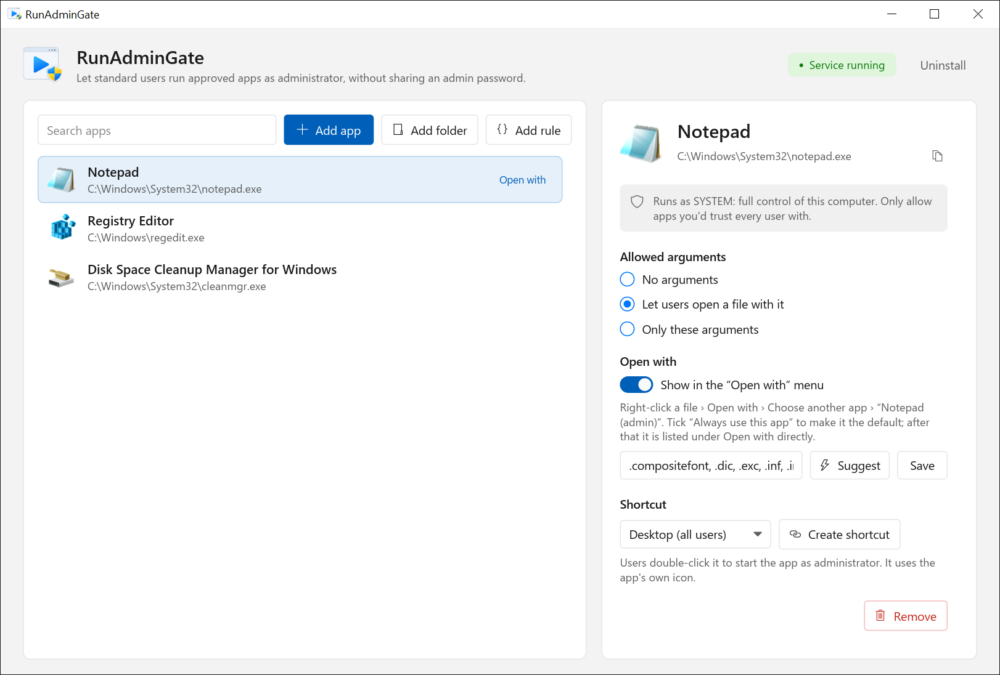

Started as SYSTEM for CONTOSO\mlee (session 2): "C:\Program Files\Fabrikam\Updater\update.exe"
Process ID 6120
For Windows system administrators and IT support
Run approved apps as administrator without giving out admin rights
RunAdminGate is a small Windows service with an allow-list. You choose the programs, folders and installers. Standard users start them elevated from a shortcut or the Open with menu. Nobody types an admin password, none is stored, and every start is written to the Event Log.
- Free, source on GitHub
- Windows 10, 11 and Server, 64-bit
- No .NET or other runtime
- Version 0.2.0 preview

Refused for CONTOSO\mlee: C:\Users\mlee\Downloads\setup.exe
This program is not on the RunAdminGate allow-list.
The problem
Still fighting user permissions?
Plenty of older programs only work when they run as administrator. On a PC where users are standard users, as they should be, every start of that program needs someone who knows the admin password.
User Account Control
Do you want to allow this app from an unknown publisher to make changes to your device?
Client 01
Publisher: Unknown
File origin: Hard drive on this computer
Show more details
To continue, enter an admin user name and password.
Administrator
Password
Domain: Demo-Company
YesNo
-
An old program demands admin rights
Accounting software, a lab instrument tool, a device configurator. It was written when every user was an admin, and it still has to “Run as administrator”.
-
The user gets stuck
Windows asks for an admin user name and password. The user doesn't have one, so the task waits.
-
IT gets the call
Someone walks over, remotes in, or reads the password out over the phone. Tomorrow it happens again.
-
The quick fixes aren't safe
Shared admin passwords end up in notes and scripts. A password saved with
runas /savecredworks for every program. Making the user a local admin opens up the whole PC.
With RunAdminGate
The program just opens, and the user keeps working
Allow the program once. From then on the user starts it like any other app, and it runs with the rights it needs. Nobody has to type, share or store an admin password.
- No more waiting The approved program opens from a shortcut or Open with. No password prompt, no ticket, no IT visit.
- Secure No admin password is stored on the PC. Users stay standard users, only the programs on your list run elevated, and every start is logged.
- Easy to set up Install the service, add the program, create a shortcut. One command rolls the same setup out to every PC.
- The program stays as it is No repackaging and no changes to the old program. RunAdminGate only decides who may start it elevated.
How it works
One allow-list, checked on every start
The launcher the user runs has no rights of its own. It asks a service, and the service decides.
-
The user starts the app
From a shortcut such as “Notepad (admin)”, from Open with, or from a script.
runadmingate.exe "C:\Tools\tool.exe" -
The launcher asks the service
It sends the program path and arguments over a local named pipe. Requests from the network are rejected.
\\.\pipe\RunAdminGate -
The service checks the list
Paths are normalized first, so
..\can't climb out of an allowed folder. No match means no start.HKLM\SOFTWARE\ RunAdminGate -
The program starts elevated
It runs as SYSTEM, or as the user with admin rights, on the user's own desktop. The Event Log records who started what, with the process ID.
Event ID 1 · 2 · 3
Computer\HKEY_LOCAL_MACHINE\SOFTWARE\RunAdminGate
| Name | Type | Data |
|---|---|---|
| (Default) | REG_SZ | (value not set) |
| AllowedPath | REG_EXPAND_SZ | "C:\Windows\System32\notepad.exe" %1;C:\Tools\;\\fs01\updates\setup*.msi /qn |
| LogonFlag | REG_EXPAND_SZ | asservice |
The whole configuration is one registry key. Standard users can read it but can't change it, and Group Policy Preferences can push the same value to every PC.
Features
Small enough to read, strict where it counts
Apps, folders or patterns
Allow C:\Tools\app.exe, a folder like C:\Tools\, its subfolders with C:\Tools\**, or \\server\share\setup*.exe. Patterns match the whole path, and the drive or share is always written out.
Argument control
Per program: no arguments, one file to open (%1), or exactly the arguments you list, such as /S. Anything else is refused.
Shortcuts with the app's icon
Put “App (admin)” on the desktop for all users or in the Start menu. It looks like the app, so users know what they are clicking.
Open with
Right-click a file and open it in the elevated app, for config files and logs that need admin rights to save.
Audit in the Event Log
Event ID 1 for a start, 2 for a refusal, 3 for a failure, each with the account and session. Forward them to your SIEM like any other Windows event.
Silent install
runadmingate.exe /install /quiet returns 0 on success and 1603 on failure, so any deployment tool that runs a command can roll it out.

*\updates\setup.exe could match a file anywhere, so it is rejected.
Security
What the gate enforces, and what stays your call
RunAdminGate controls which programs start elevated. What an elevated program can do after that depends on the program you chose.
Built in
- No stored passwordThe service runs as LocalSystem and starts programs itself. There is no credential on disk to steal.
- Only administrators change the listThe allow-list lives under HKLM. Users can't add their own entries.
- Local, signed-in users onlyThe pipe accepts interactive users on the PC. Network clients and anonymous logons are rejected.
- Strict matching that fails closedPaths are normalized before matching, patterns must match the whole path, and invalid entries are ignored and logged as Event ID 20.
Your call
- Elevated apps can start other appsA program with a File › Open dialog, a built-in console or a script host gives the user everything SYSTEM can do. That includes Notepad, which these screenshots use as a demo. Allow tools, not shells.
- Don't allow folders users can write toIf a user can copy a file into an allowed folder, they can run anything. Keep allowed folders under Program Files or on a read-only share.
- Pick the right account per appAs SYSTEM, a program doesn't see the user's mapped drives or HKEY_CURRENT_USER. Apps that need the user's own settings should run as the user with administrator rights. Test each app before you roll it out.
Compared
The usual workarounds, side by side
| Question | Make the user a local admin | Saved admin credentials | RunAdminGate |
|---|---|---|---|
| What can the user run elevated? | Anything | Anything, with runas /savecred | Only listed programs |
| Admin password stored on the PC? | No | Yes | No |
| Control over arguments? | No | Depends on the tool | None, one file, or an exact list |
| Record of elevated starts? | No | Usually not | Event Log, every start and refusal |
| Central management | Group membership | Per PC | One registry value, Group Policy |
FAQ
Questions admins ask first
Does it turn off UAC?
No. UAC stays on for everything else. Programs on the list are started by the service, so they open without a UAC prompt.
Which account do the programs run as?
You choose per app. SYSTEM account works for any user, but the program doesn't see the user's own settings or mapped drives. The user, with administrator rights runs the program under the user's own account, elevated. For that one start, RunAdminGate adds the Administrators group to a new logon token; the user is never added to the local Administrators group.
Which Windows versions are supported?
Windows 10, Windows 11 and Windows Server 2019 or later, all 64-bit. Version 0.2.0 was tested on Windows Server 2019 (build 17763, the same build as Windows 10 version 1809). Windows 10 and 11 desktops haven't been tested yet.
Can I manage it with Group Policy?
Yes. The allow-list is the AllowedPath registry value, so a Group Policy Preferences registry item can set it on every PC. The service reads it on each request, so changes apply without a restart. An ADMX template is planned.
What file types can it start?
.exe, .com, .bat, .cmd, .ps1, .vbs and .msi files.
Is it free?
Yes. The source code is on GitHub and you can build it yourself. The license hasn't been chosen yet.
Disclaimer
Read this before you deploy
Provided as is. RunAdminGate is provided “as is”, without warranty of any kind, express or implied, including warranties of merchantability, fitness for a particular purpose and non-infringement.
Preview software. Version 0.2.0 is an early preview. It may contain bugs, and its behavior may change between versions. Test it on machines that don't matter before you use it anywhere else.
You choose what runs elevated. Programs started through RunAdminGate run with full SYSTEM or administrator rights. You are responsible for the programs and rules you allow. The authors are not liable for any damage, data loss, security incident or downtime that results from using it.
Your policies and licenses. Check that using it fits your organization's security policy and compliance rules, and the license terms of the programs you allow.
Trademarks. RunAdminGate is an independent project. It is not affiliated with, endorsed by or sponsored by Microsoft. Windows and Windows Server are trademarks of the Microsoft group of companies. Contoso and Fabrikam are fictional example names.
Try it on a test PC first
This is an early preview. Set it up on a lab machine, allow one app, and sign in as a standard user to see it work.